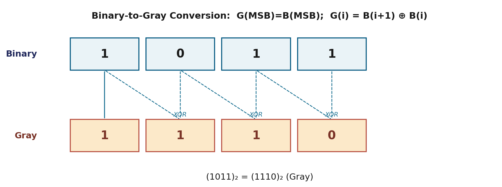

Pure binary numbers are great for arithmetic, but a lot of what a computer stores isn't really "a number" in the arithmetic sense — it's a decimal digit on a display, a keystroke, or a shaft position on a motor. This page covers the family of binary codes built for exactly those jobs: BCD, self-complementing codes, Gray code, and simple error-detecting codes.
A binary code is simply a group of n bits assigned to represent something — a digit, a character, a position — where up to 2ⁿ distinct patterns are available. The catch is that a code doesn't have to use every available pattern: it only needs enough of them to cover what it's representing, and different codes make different choices about which patterns to use and why.
The most common decimal code is BCD (Binary-Coded Decimal), also called the 8421 code because each bit position carries the ordinary binary weight 8, 4, 2, 1. Each decimal digit (0–9) is encoded on its own, in 4 bits, using its normal binary value.
Since 4 bits give 16 possible patterns but only 10 decimal digits exist, six patterns (1010–1111) are simply unused in BCD.
| Decimal | BCD (digit by digit) | Straight binary (whole number) |
|---|---|---|
| 396 | 0011 1001 0110 | 110001100 |
| 99 | 1001 1001 | 1100011 |
A code is called self-complementing if the 9's complement of a decimal digit can be found just by flipping every bit of its code — no subtraction needed.
Digit 6 → BCD 0110 → Excess-3 = 0110 + 0011 = 1001 Flip every bit of 1001 → 0110 Decode as Excess-3 (subtract 3): 0110 − 0011 = 0011 = digit 3 Check: the 9's complement of 6 is 9 − 6 = 3. ✓ No subtraction needed — just a bit-flip.
Gray code (also called reflected binary or a unit-distance code) has one defining property: consecutive values differ in exactly one bit position. Ordinary binary doesn't have this — going from 0111 to 1000 flips all four bits at once.
This matters in hardware because a transition that's supposed to change one bit can, in practice, change different bits at very slightly different instants. In ordinary binary that can produce a wildly wrong intermediate value for a few nanoseconds; in Gray code, at most one bit is ever mid-transition, so the worst case is being one step off — never wildly wrong.
| Decimal | Binary | Gray Code |
|---|---|---|
| 0 | 0000 | 0000 |
| 1 | 0001 | 0001 |
| 2 | 0010 | 0011 |
| 3 | 0011 | 0010 |
| 4 | 0100 | 0110 |
| 5 | 0101 | 0111 |
| 6 | 0110 | 0101 |
| 7 | 0111 | 0100 |

Conversion rule: the MSB of Gray code equals binary's MSB; every other Gray bit is the XOR of that binary bit and the one immediately to its left. Gray code is used heavily in rotary position encoders — the shaft-angle sensors behind motor controllers, robotics, and old-style mechanical mice.
ASCII is the standard alphanumeric code — 7 bits, covering 128 characters: letters, digits, punctuation, and control characters.
A parity bit is a simple error-detecting addition: one extra bit appended so the total count of 1-bits matches a fixed rule (even parity: total is even; odd parity: total is odd). It catches a single flipped bit during transmission, but it cannot say which bit flipped, and it misses an even number of simultaneous flips.
| Code | Purpose | Key property |
|---|---|---|
| BCD (8421) | Decimal digit storage/display | Weighted; not self-complementing |
| Excess-3 | Decimal digit storage | Self-complementing (BCD + 3) |
| Gray code | Position/angle sensing | One-bit change between consecutive values |
| ASCII | Text characters | 7-bit, 128 characters |
| Parity | Error detection | Catches odd numbers of bit flips only |